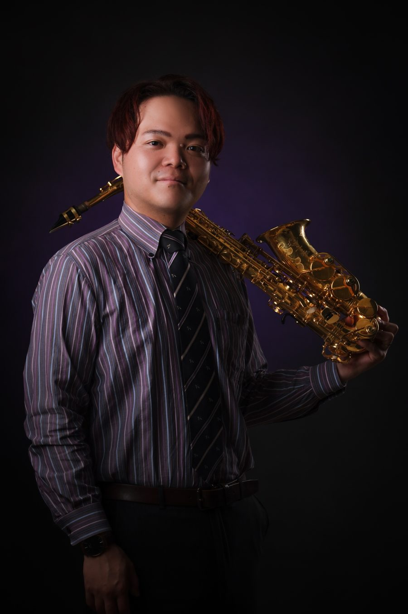
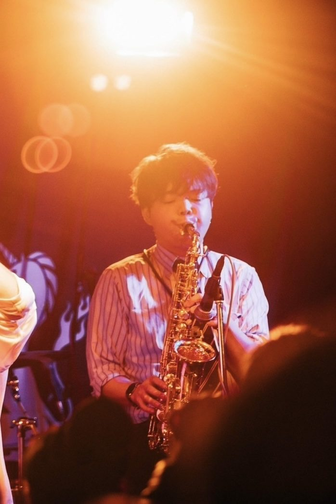

PROFILE
サックス奏者・作編曲家。福島県いわき市生まれ、千葉県を拠点に、吹奏楽、ビッグバンド、ジャズ、ポップスと幅広いジャンルで演奏しています。

中学校の吹奏楽部でサックスを始める。福島県立磐城高校では第18回全日本高等学校選抜吹奏楽大会でアルトサックスのソロを披露し、ゴールデン賞を受賞。学生指揮も務め、全日本吹奏楽コンクール全国大会で2006年・2007年に2年連続金賞。在学中はクラシックサックスを佐々木雄二氏に師事。
卒業後はジャズ・ポップスに転向し、尚美ミュージックカレッジ JAZZ POPSコースに進学。米米CLUB・BIG HORNS BEEの織田浩司氏に師事し、首席で卒業。
2015〜2016年は母校・磐城高校吹奏楽部の専属トレーナーを務め、全国大会金賞へ導く。2018年には単身ニューヨークへ渡り、現地のセッションに多数参加。2019年、いわき芸術文化交流館アリオスでのコンサートを収録した1stアルバム「The SAX Concert」をリリース。同年からYouTube「ともおのサックスチャンネル」を始める。
